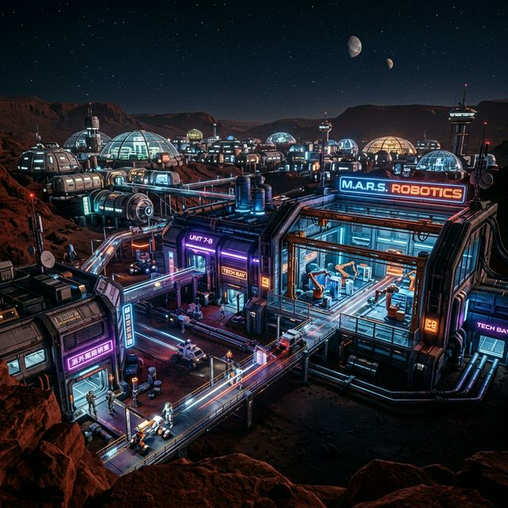
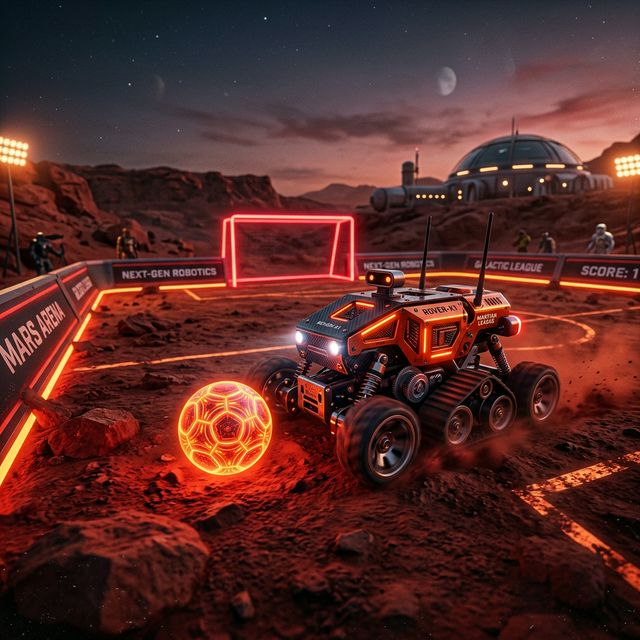
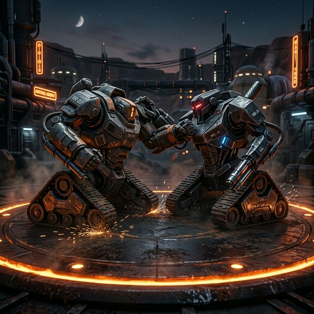
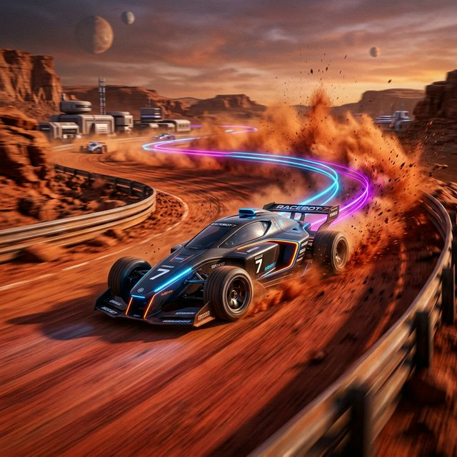
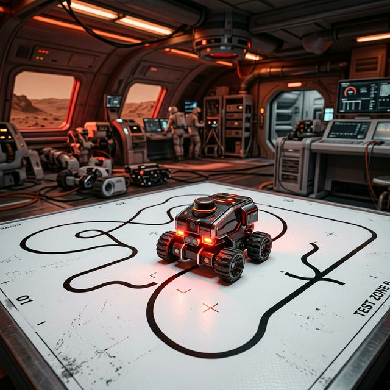

MECHANICA
by
MARS Labs
Join the ultimate inter-college robotics showdown hosted by MARS Labs, under the Center for IoT at PES University. Bring your robots, compete for glory, and win massive prizes.
Step Into the Arena
Mechanica is the flagship robotics competition organized by MARS Labs (Mobile and Autonomous Robotic Systems), under the Center for IoT at PES University (RR Campus).
This is your chance to test your engineering skills, strategic thinking, and autonomous logic against the best teams from across the nation. Each event has been carefully designed to push your robots to their limits.
Note: Participants must build and bring their own robots.

The Martian Trials
Four incredible events. Four paths to victory.

Red Planet Strikers
A tactical soccer face-off on the red sand. Control the ball, pass, and score against your opponents within a 4-minute half.

Titan Tussle
A battle of strength and endurance. Push your opponent out of the 150cm circular Dohyo while remaining inside.

Olympus Dash
A technical sprint designed to test the limits of your robot's power-to-weight ratio and handling on a 25-meter dusty track.

Labyrinth of Curiosity
A test of autonomous precision. Follow a fluctuating black line across acute junctions and "signal loss" discontinuities.
Team Registration
Teams can have 1 to 4 members. Registration fee is ₹200 per team.